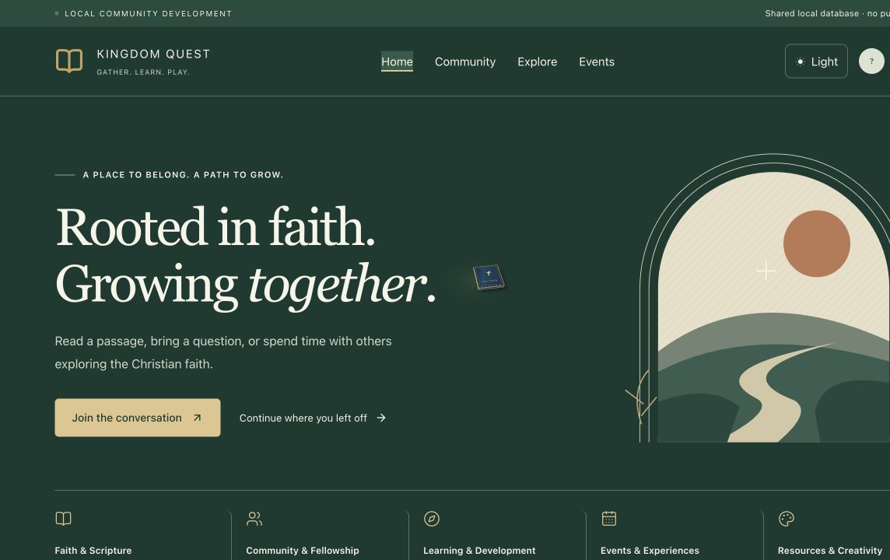
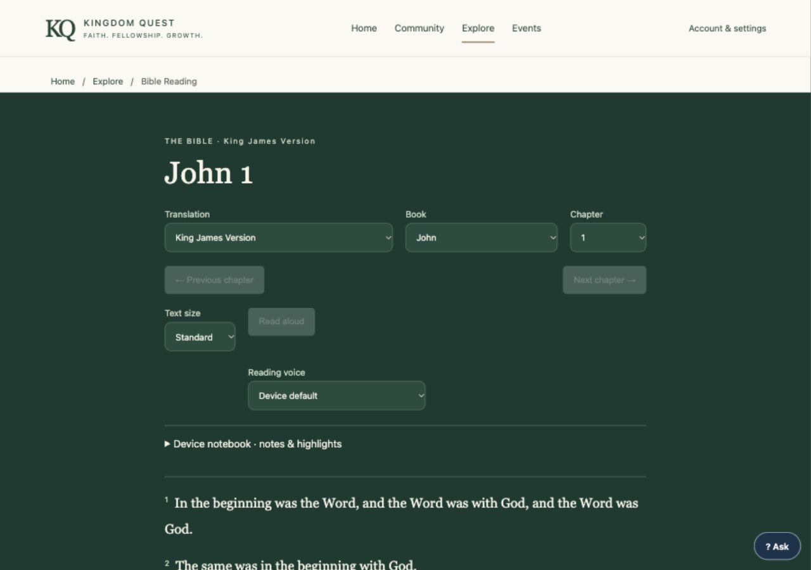
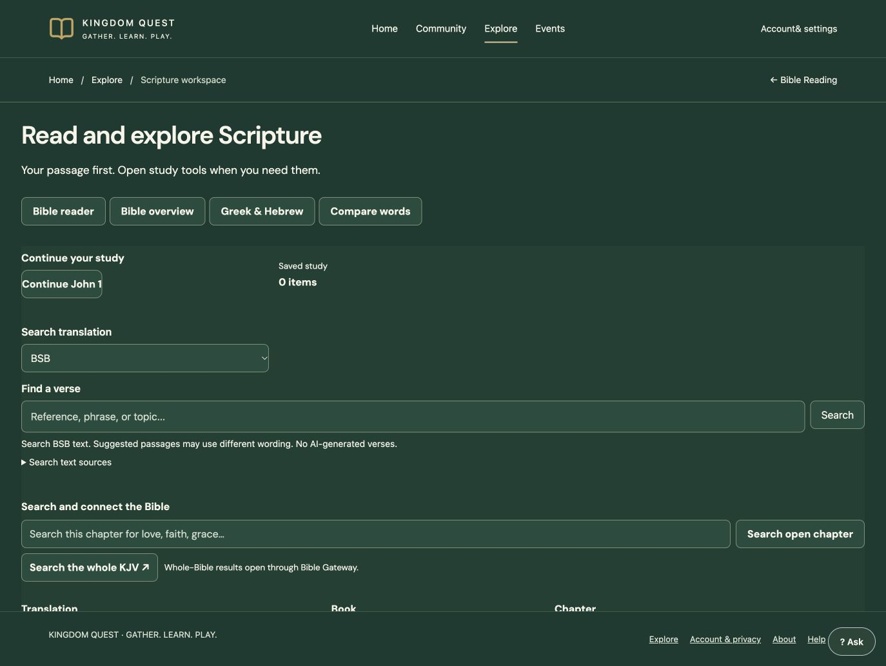

PROJECT VERIFICATION · 5 NOVEMBER 2026
Kingdom Quest
A Christian community for Scripture reading, study, conversation and shared activities.
Private development and testing.
A look inside the existing application
Unaltered screenshots from local acceptance on 3 November 2026. These are dated development evidence, not a live public release.

Community homepage · Local capture, 3 November 2026
Bible Reader · Earlier local development capture; device reading voice is speech synthesis.
Scripture Workspace · Earlier local development capture; no private study notes shown.These images show existing reader and study features, not newly licensed provider access.
Read the full project description and boundaries